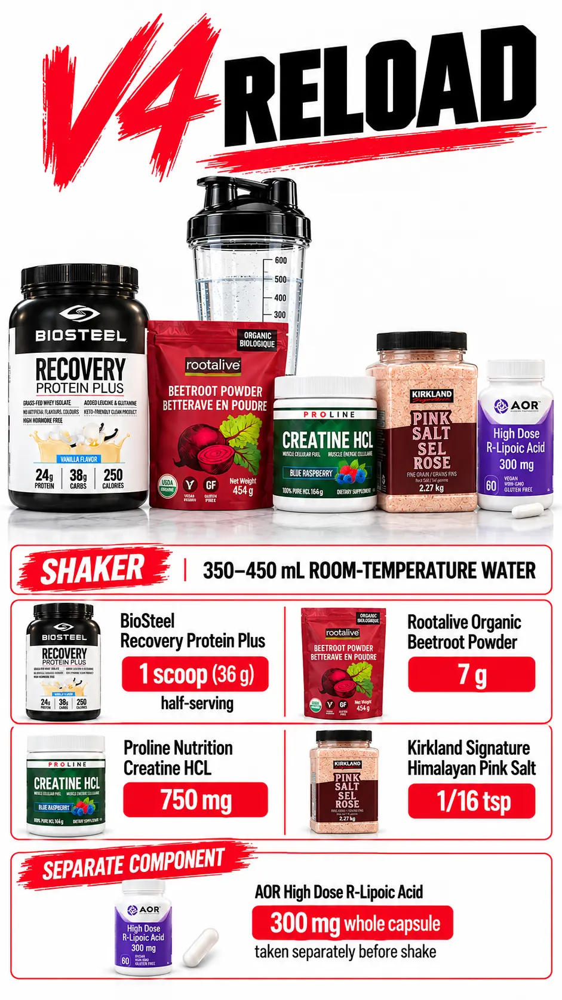

V4 RELOAD — Post-Training
- 300mgR-ALA
- 36gRecovery Protein
- 7gBeetroot
- 750mgCreatine HCl
- R-ALA (300mg): R-alpha lipoic acid — taken with water BEFORE the shake. Antioxidant and glucose disposal agent. Swallowed whole, not in shaker.
- Recovery Protein (36g half-serving): BioSteel — 12g protein, 19g carbs, 125 kcal. The 2:1 carb-to-protein ratio drives glycogen replenishment post-training.
- Beetroot (7g): Natural nitrate source for nitric oxide. Extends the pump post-workout and supports blood flow for nutrient delivery.
- Creatine HCl (750mg): Dose 1 of 2 (second dose in V10). HCl form — no loading, no bloating. Daily saturation across V4 + V10.

FIT PROTOCOL · V2.0
V4 RELOAD

V4 RELOAD
After the workout (States A and C); R-ALA remains separate
After the workout (11:00 morning reference); moves after the evening session in State C. Preceded by whole R-ALA 300 mg with water, separate from the shaker.
350-450 mL room-temperature water
- BioSteel Recovery Protein Plus (1 scoop / 36 g half-serving)
- Rootalive Beetroot Powder 7 g raw
- Proline Pure Creatine HCl 750 mg active
- Kirkland Himalayan Salt 1/16 tsp
Clinical notes · five lenses
- Mechanism
- Scaled half-serving: 12 g protein, 19 g carbohydrate, 125 kcal. Dietary nitrates from beetroot combine with creatine HCl. R-ALA swallowed whole; emptying into the shake risks mucosal irritation and degradation.
- Stack interaction
- R-ALA 300 mg + glycogen- depleted training + only 19 g carbohydrate in V4 — Hypoglycaemia symptoms post- training need glucose awareness, not stimulant escalation.
- Margin
- R-ALA 300 mg training days; no UL established. V4 is one 36 g half-serving, with 19 g carbohydrate.
- Monitor
- Recurrent sweating, tremor or confusion after training.
- Stop rule
- Recurrent sweating, tremor or confusion after training: stop and seek assessment.
Encyclopedia V2.0 · Part III · Parts IV–VI · Annex II · Read the source cascades


V4 RELOAD · current record
After training
BioSteel Recovery Protein Plus: 1 scoop / 36 g, half the listed full serving. Rootalive beetroot 7 g. Proline Nutrition creatine HCl 750 mg. Kirkland Himalayan pink salt: 1/16 tsp. Room-temperature water: 350–450 mL. AOR R-lipoic acid: one whole 300 mg capsule, separate before the drink.